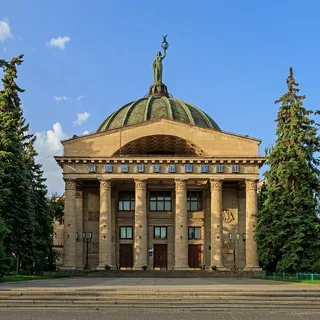

1. Официальный сайт города - https://volgadmin.ru/
2. Дополнительные информационные ресурсы о городе:
2.2 Группа ВК города Волгоград
2.4 Афиша мероприятий города Волгоград
3. Основная информация о городе:
4. Карта города:
Вид со спутника:
5. Историческая справка:
На месте современного Волгограда, между реками Сухая и Мокрая Мечётка находилось ордынское поселение с неизвестным названием. Российские переселенцы назвали его руины Мечётным городищем, там найдены монеты улуса Джучи с 1274 по 1377 год. Современные археологи обследовать городище не успели, так как его строения растаскивались на строительный кирпич с самого момента основания Царицына. Профессиональная экспедиция 1920 года археолога Баллада была прервана Гражданской войной, и окончательно следы Мечётного городища уничтожены ведущейся с 1930-х годов по настоящее время застройкой волгоградского микрорайона Спартановки (здесь же погибла стоянка древнего человека Сухая Мечётка)[13]. Гидроним «Мечётка», вероятно, дан по этому поселению, он встречается в центральной России и происходит от др.-рус. «мечькъ» — медведь, но в степи они не обитают. Возможно, река названа по существовавшим развалинам мечети. Волгоград не является преемником этого поселения: оно расположено в 18 км севернее исторического ядра Царицына и прекратило своё существование за 200—250 лет до его основания. Золотоордынское поселение существовало также в устье реки Царицы.
С XV века в результате событий, названных русскими летописцами «Великой замятней», Золотая Орда стала распадаться на самостоятельные ханства: Казанское, Сибирское, Астраханское, Крымское и другие, более мелкие. Распад сопровождался кровопролитными войнами и угоном населения в рабство. Сарай-Берке постепенно разрушался и пустел в ходе междоусобных войн ордынских ханов, и в результате, окончательно покинут населением. Русское царство в XVI веке, наоборот, проходило период централизации, становилось всё сильнее и покоряло ханства одно за другим: Казанское в 1552-м, Астраханское в 1556-м, Сибирское в 1598-м. Волжский торговый путь опять возродился, Русское царство продавало в Астрахани лес, зерно, сукно, кожи, воск, мёд, а покупало соль, ткани, металлы (собственной добычи железа на нужды страны не хватало, а добычи цветных металлов не было совсем), ладан. Волга стала транзитной и для международной торговли. Англия искала пути торговли с Персией для покупки шёлка и специй в обход конкурентов — Испании и Португалии. Первое упоминание о Царицыне дошло до нас в письме купца Московской компании Христофора Берроу (русских источников за этот период не сохранилось из-за пожаров в Москве 1626 и 1701 годов, когда сгорел весь архив Казанского Приказа).
6. Фотогалерея:
Родина мать «Родина-мать зовёт» — название главной скульптуры мемориального комплекса, построенного на Мамаевом кургане в городе-герое Волгограде. Холм, на котором стоит фигура женщины с мечом, возвышается на 14 м, а сама статуя имеет высоту 85 метров. Она господствует над окружающей местностью и видна с расстояния десятков километров. |
|
Мальница Гергардта Мельница Гергардта в Волгограде — здание паровой мельницы начала XX века, разрушенное в дни Сталинградской битвы и не восстановленное как память о войне. Входит в состав Музея-заповедника «Сталинградская битва». |
|
Волгоградский планетарий Сталинградский планетарий, единственный в Нижнем и Среднем Поволжье, вступил в строй. Восхищению людей не было предела. Волгоградский планетарий за всю свою деятельность стал центром пропаганды естественно-научных знаний. Коллектив этого уникального учреждения вложил много труда, творческой инициативы, чтобы организовать работу на высоком уровне. |
 |
Мемориальный комплекс "Лысая гора" Мемориальный комплекс, который сегодня возвышается на Мамаевом кургане, вполне мог быть установлен в Советском районе Волгограда на Лысой горе. Во время Сталинградской битвы в районе Лысой горы шли не менее ожесточенные бои, чем за знаменитую высоту 102,0 на Мамаевом кургане. |
Видеоклипы о Волгограде: